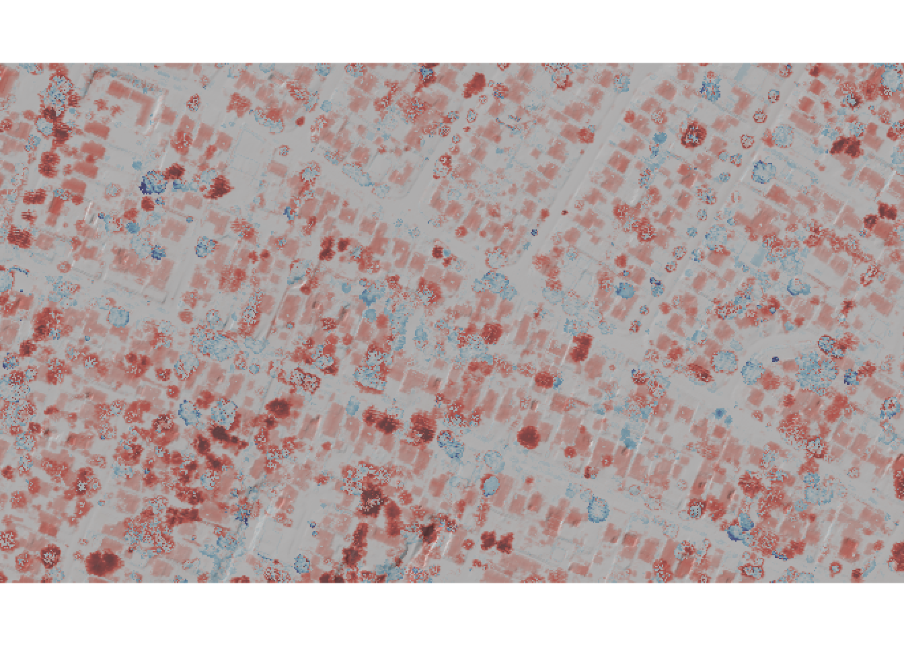
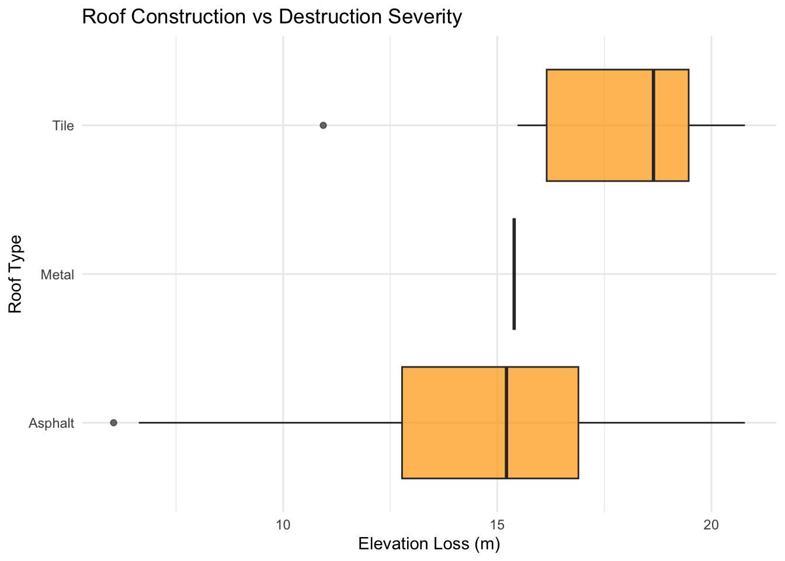

Background
The National Science Foundation’s National Ecological Observatory Network (NEON) collects standardized, open-access ecological data at 81 freshwater and terrestrial field sites across the country. In addition to an amazing array of on-the-ground surveys, they also periodically collect Lidar data at the sites. All data is publicly available through the NEON Data Portal.
For this exercise, we will imagine that we are interested in studying canopy structure (tree height) at the San Joaquin Experimental Range in California. We’re interested in figuring out if we can rely on the Lidar data NEON is collecting by comparing tree height estimates to on-the-ground field surveys. If the estimates between the two methods are similar, we could save ourselves a lot of time and effort measuring trees!
This lab is based on materials developed by Edmund Hart, Leah Wasser, and Donal O’Leary for NEON.
Task
To estimate tree height from Lidar data, we will create a canopy height model (CHM) from Lidar-derived digital surface and terrain models. We will then extract tree height estimates within the locations of on-the-ground surveys and compare Lidar estimates to measured tree height in each plot.
NoteGetting started
To get started, fork and clone this repository to access all necessary data.
1. Data
Lidar data
- digital surface models (DSM) represent the elevation of the top of all objects
- digital terrain model (DTM) represent the elevation of the ground (or terrain)
Data files:
SJER2013_DSM.tifSJER2013_DTM.tif
Vegetation plot geometries
- Contains locations of vegetation surveys
- Polygons representing 20m buffer around plot centroids
Data file: SJERPlotCentroids_Buffer.shp
Vegetation surveys
- Measurements for individual trees in each plot
Data files: - D17_2013_vegStr.csv - Metadata available in D17_2013_vegStr_metadata_desc.csv
Workflow
1. Set up
Let’s load all necessary packages:
library(terra)
library(sf)
library(tidyverse)
library(tmap)
library(here)2. Load Lidar data
# digital surface model (DSM)
dsm <- rast(here::here("data", "SJER2013_DSM.tif"))
# digital terrain model (DTM)
dtm <- rast(here::here("data", "SJER2013_DTM.tif"))Let’s check if the DSM and DTM have the same resolution, position, and extent by creating a raster stack:
test_raster <- c(dsm, dtm)Create the canopy height model (CHM) or the height of all objects by finding the difference between the DSM and DTM:
chm <- dsm - dtm3. Load vegetation plot geometries
This includes the locations of study plots and the surveys of individual trees in each plot.
# read in plot centroids
plot_centroids <- st_read(here::here("data", "PlotCentroids", "SJERPlotCentroids_Buffer.shp"))# test if the plot CRS matches the Lidar CRS
if(st_crs(plot_centroids) == st_crs(chm)) {
print("coordinate reference systems match")
} else{
plot_centroids <- st_transform(plot_centroids, crs = st_crs(chm))
}[1] "coordinate reference systems match"Code
tm_shape(chm) +
tm_raster(col.legend = tm_legend("Digital surface model (m)")) +
tm_shape(plot_centroids) +
tm_polygons()
4. Load vegetation survey data
Let’s find the maximum tree height in each plot:
# read in survey data and find the maximum tree height in each plot
veg_surveys <- read.csv(here::here("course-materials", "data", "week10", "VegetationData", "D17_2013_vegStr.csv")) %>%
group_by(plotid) %>%
summarise("survey_height" = max(stemheight, na.rm = TRUE))Now find the maximum tree height in each plot as determined by the CHM:
extract_chm_height <- terra::extract(chm, plot_centroids, fun = max) %>%
rename(chm_height = SJER2013_DSM) %>%
select(chm_height)Combine tree height estimates from the Lidar and plot surveys:
plot_centroids <- cbind(plot_centroids, extract_chm_height) %>%
left_join(.,veg_surveys, by = c("Plot_ID" = "plotid"))5. Plot results
Let’s compare the estimates between the two methods: Lidar and on-the-ground surveys
- To make the comparison, we’ll add a 1:1 line
- If all the points fall along this line it means that both methods give the same answer
- Let’s also add a regression line with confidence intervals to compare how the overall fit between methods compares to the 1:1 line
Code
ggplot(plot_centroids, aes(y=chm_height, x= survey_height)) +
geom_abline(slope=1, intercept=0, alpha=.5, lty=2) + #plotting our "1:1" line
geom_point() +
geom_smooth(method = lm) + # add regression line and confidence interval
ggtitle("Validating Lidar measurements") +
xlab("Maximum Measured Height (m)") +
ylab("Maximum Lidar Height (m)")
We’ve now compared Lidar estimates of tree height to on-the-ground measurements!
WarningInterpreting results
It looks like the Lidar estimates tend to underestimate tree height for shorter trees and overestimates tree height for taller trees. Or maybe human observers underestimate the height of tall trees because they’re challenging to measure? Or maybe the digital terrain model misjudged the elevation of the ground? There could be many reasons that the answers don’t line up! It’s then up to the researcher to figure out if the mismatch is important for their problem.
Test
dtm_pre <- rast(here::here("course-materials", "data", "week10", "Eaton", "dtm_eaton_alignedNK_1m_PREFIRE.tif"))
dsm_pre <- rast(here::here("course-materials", "data", "week10", "Eaton", "dsm_eaton_alignedNK_1m_PREFIRE.tif"))
dtm_post <- rast(here::here("course-materials", "data", "week10", "Eaton", "dtm_eaton_epsg32611_geoid12b_1m_POSTFIRE.tif"))
dsm_post <- rast(here::here("course-materials", "data", "week10", "Eaton", "dsm_eaton_epsg32611_geoid12b_1m_POSTFIRE.tif"))damage <- st_read(here::here("course-materials", "data", "week10", "Eaton", "06061784-f911-4d0e-aca5-0768ac66aac5.gdb")) %>% st_transform(crs = crs(dsm_post))Reading layer `POSTFIRE' from data source
`/Users/annalieseadams/Git/EDS-223-Geospatial.github.io/course-materials/data/week10/Eaton/06061784-f911-4d0e-aca5-0768ac66aac5.gdb'
using driver `OpenFileGDB'
Simple feature collection with 140 features and 43 fields
Geometry type: POINT
Dimension: XY
Bounding box: xmin: -13151820 ymin: 4055329 xmax: -13151070 ymax: 4055742
Projected CRS: WGS 84 / Pseudo-Mercatorcrs(damage) == crs(dsm_post)[1] TRUE# Ground surface change (bare earth)
diff_dtm <- dtm_post - dtm_pre
|---------|---------|---------|---------|
=========================================
# Surface change (buildings + vegetation)
diff_dsm <- dsm_post - dsm_pre
|---------|---------|---------|---------|
=========================================
names(diff_dtm) <- "DTM_change"
names(diff_dsm) <- "DSM_change"# Clip extreme values for better visualization
diff_dsm_clipped <- clamp(diff_dsm, lower = -15, upper = 10)
|---------|---------|---------|---------|
=========================================
# Create fire damage color palette
fire_palette <- c("#8B0000", "#FF4500", "#FF6347", "#FFFFFF",
"#87CEEB", "#4169E1", "#00008B")
# DSM difference map
tm_dsm <- tm_shape(diff_dsm_clipped) +
tm_raster(
col = "DSM_change",
palette = fire_palette,
breaks = c(-15, -10, -5, -2, 0, 2, 5, 10),
midpoint = 0,
title = "Elevation\nChange (m)",
style = "cont"
) +
tm_title(text = "Eaton Fire: DSM Elevation Change (2025 - 2016")+
tm_credits("Red = elevation loss (destroyed buildings/vegetation) | Blue = elevation gain\nData: OpenTopography",
position = c("left", "bottom"),
size = 0.6)── tmap v3 code detected ───────────────────────────────────────────────────────[v3->v4] `tm_raster()`: instead of `style = "cont"`, use col.scale =
`tm_scale_continuous()`.
ℹ Migrate the argument(s) 'breaks' (rename to 'ticks'), 'midpoint', 'palette'
(rename to 'values') to 'tm_scale_continuous(<HERE>)'
For small multiples, specify a 'tm_scale_' for each multiple, and put them in a
list: 'col'.scale = list(<scale1>, <scale2>, ...)'
[v3->v4] `tm_raster()`: migrate the argument(s) related to the legend of the
visual variable `col` namely 'title' to 'col.legend = tm_legend(<HERE>)'library(rayshader)
# Match extents
dtm_post <- crop(dtm_post, ext(diff_dsm))
dtm_post <- resample(dtm_post, diff_dsm, method = "bilinear")
|---------|---------|---------|---------|
=========================================
# DOWNSAMPLE to reduce memory (aggregate by factor of 5 = 5m resolution)
diff_dsm_small <- aggregate(diff_dsm, fact = 5, fun = "mean")
|---------|---------|---------|---------|
=========================================
dtm_post_small <- aggregate(dtm_post, fact = 5, fun = "mean")
|---------|---------|---------|---------|
=========================================
# Convert to matrices
elev_mat <- raster_to_matrix(dtm_post_small)
diff_mat <- raster_to_matrix(diff_dsm_small)
# Create overlay colors
overlay <- height_shade(
diff_mat,
texture = colorRampPalette(c("#8B0000", "#FF6347", "#FFFFFF", "#4169E1", "#00008B"))(256)
)
# Create 3D plot
elev_mat %>%
sphere_shade(texture = "bw") %>%
add_overlay(overlay, alphalayer = 0.7) %>%
plot_3d(
elev_mat,
zscale = 10,
theta = 45,
phi = 30,
zoom = 0.6,
windowsize = c(1200, 800)
)add_image_overlay() deprecated--use render_image_overlay() instead.# Pick single block of homes in Altadena
neighborhood <- ext(394486.57, 395167.24, 3784596.32, 3784987.29) # Adjust coordinates
# Crop
diff_crop <- crop(diff_dsm, neighborhood)
dtm_crop <- crop(dtm_post, neighborhood)
dtm_crop <- resample(dtm_crop, diff_crop, method = "bilinear")
# Convert to matrices
elev_mat <- raster_to_matrix(dtm_crop)
diff_mat <- raster_to_matrix(diff_crop)
# Color overlay
overlay <- height_shade(
diff_mat,
texture = colorRampPalette(c("#8B0000", "#FF6347", "#FFFFFF",
"#87CEEB", "#00008B"))(256),
range = c(-20, 20)
)
# Create map with strong hillshade
elev_mat %>%
sphere_shade(texture = "bw", sunangle = 315) %>%
add_overlay(overlay, alphalayer = 0.7) %>%
add_shadow(ray_shade(elev_mat, zscale = 1), 0.5) %>%
plot_map()add_image_overlay() deprecated--use render_image_overlay() instead.
Damage Analysis
diff_dsm_study <- crop(diff_dsm, neighborhood)damage_buffers <- st_buffer(damage, dist = 25)
lidar_min <- terra::extract(diff_dsm, vect(damage_buffers), fun = min, na.rm = TRUE)
lidar_mean <- terra::extract(diff_dsm, vect(damage_buffers), fun = mean, na.rm = TRUE)damage_analysis <- damage_buffers %>%
mutate(
lidar_min_change = lidar_min[[2]],
lidar_mean_change = lidar_mean[[2]],
elevation_loss = abs(lidar_min_change)
)ggplot(damage_analysis %>% st_drop_geometry() %>%
filter(!is.na(ROOFCONSTRUCTION)),
aes(x = reorder(ROOFCONSTRUCTION, elevation_loss, FUN = median),
y = elevation_loss)) +
geom_boxplot(fill = 'orange', alpha = 0.7) +
coord_flip() +
labs(title = 'Roof Construction vs Destruction Severity',
x = 'Roof Type', y = 'Elevation Loss (m)') +
theme_minimal()